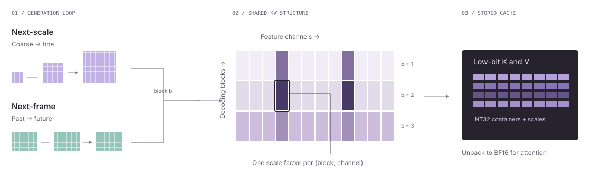
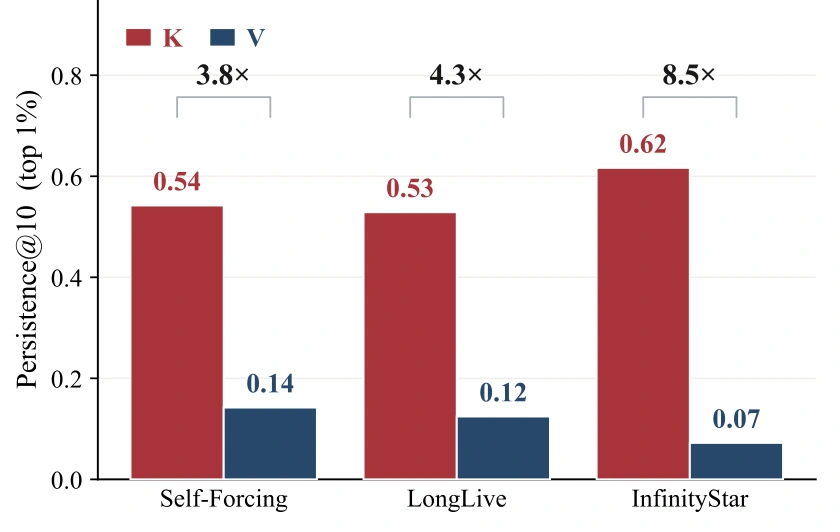
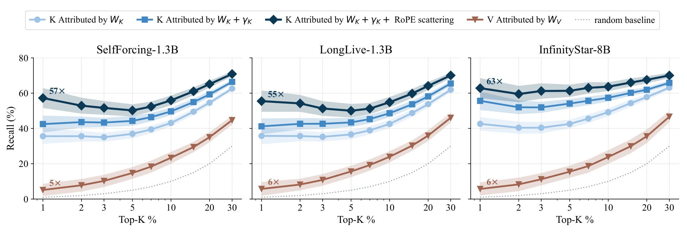
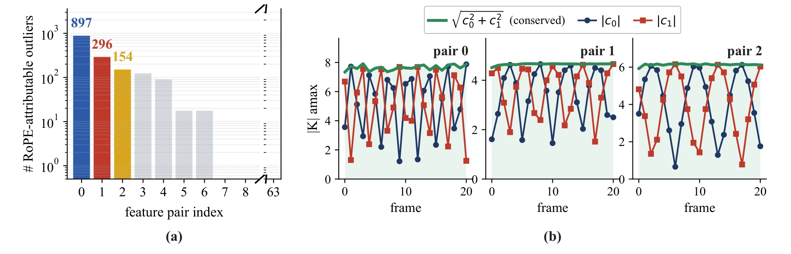
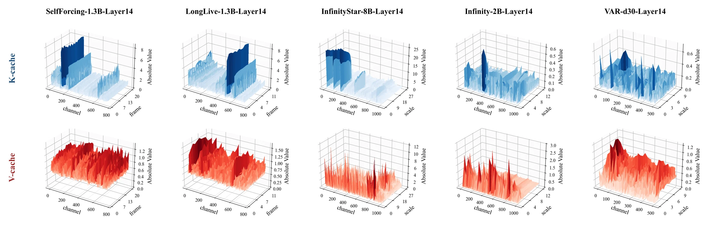
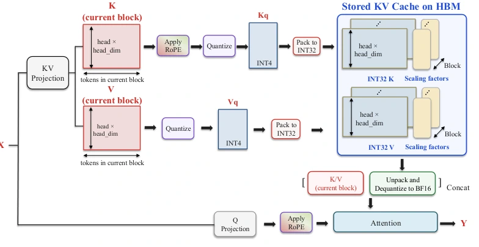

A crystal ball in sunlight
62.7 GB
16.0 GB · −74%
NeurIPS 2026 · To appear
1 University of California, Santa Barbara2 University of Minnesota
† Equal contribution · Correspondence: boxunxu@ucsb.edu
VAR-Q quantizes the key/value cache of visual autoregressive models to 2–8 bits with no calibration data and no retraining. It assigns one scale factor per feature channel and per generation block (a scale or a frame), following the measured magnitude structure of the cache. Across five model families and nine checkpoints, 4-bit KV caches reduce cache memory by 72–75% at generation quality close to BF16; Infinity-8B keeps its composition at INT2.
Same prompt and seed in every pair; only the KV cache is quantized. Each pair plays in sync when scrolled into view.
LongLive extends the next-frame setting to 30-second sequences; compare motion and scene consistency over the full clip.
Same model, prompt and seed within each pair; only the KV cache is quantized. KV memory is the paper's measurement at the evaluation batch size (3 clips for InfinityStar 720p, 12 for Self-Forcing, 20 for LongLive).
Infinity-8B INT2 image comparisons ↗Visual autoregression is next-block prediction. A block is the set of visual tokens emitted at one decoding step: a resolution scale in next-scale models (VAR, Infinity, InfinityStar), a frame in next-frame models (Self-Forcing, LongLive). Every block attends to the KV cache of all blocks before it.
Seen this way, both paradigms leave behind the same object: a KV cache indexed by feature channel and generation block. Its magnitudes share a channel × block structure: a small set of channels carries large values, and their magnitudes shift from block to block.
Why it matters for quantization. VAR-Q assigns one scale factor per channel within each block, reusing the block boundaries the generation loop already provides. No outlier detection, no calibration data, no retraining.

Why does the channel × block pattern emerge? Three experiments separate prompt-dependent outliers, persistent channel imbalance, and position-dependent magnitude shifts. Together they explain why one grouping rule, channel × block, transfers across every model family in the paper.
of the top-1% K outlier channels persist across all 10 prompts. For V, only 7–14% do.
The channel pattern is architectural, not prompt-driven 02 55–63×random recall of final K outliers from weights alone, chaining WK → γK → RoPE. The WV control reaches 5–6×.
Outlier channel identity is predictable from the K projection chain 03 +0.41VBench Total Quality from quantizing after RoPE instead of before, at the same 27.5 GB footprint (82.93 → 83.34).
RoPE moves magnitude across blocks, so groups must follow blocks01 / Architecture or input?
If outlier channels are tied to the architecture, they should recur across different prompts. Among the top 1% of channels, 53–62% of K outliers persist across all 10 prompts, compared with only 7–14% for V.
This supports a persistent architectural component in K. V outlier identity changes much more with the input. The remaining experiments trace this architectural component through the K projection chain.

02 / The channel axis
Projection weights seed the imbalance. Normalization gains can amplify it. RoPE redistributes it between paired channels. Each stage contributes to predicting which channels become outliers.
Heavy-tailed row norms in the key projection create an initial channel-magnitude imbalance.
Where post-projection RMSNorm is present, its learned channel gains amplify this imbalance.
Rotation scatters magnitude between paired channels while preserving each pair’s ℓ2 norm.
The evidence
At the top 1%, WK alone recovers 35–42% of final K outliers. Adding γK improves recall; including RoPE scattering brings the full chain to 55–63× random recall.
As a control, WV predicts V outliers at only 5–6× random recall. Weight structure explains much more of K’s outlier identity than V’s.

03 / The block axis
RoPE’s angle changes with position. For a paired set of K channels, this produces cosine and sine modulation: one channel can become large while its partner becomes small, even without a change in the underlying input amplitude.
The pair’s per-token ℓ2 norm is conserved. Individual channel magnitudes are not. Fast-rotating pairs produce stronger cross-block swings; slow pairs remain comparatively stable.

A channel × block view of the KV cache
explains where quantization groups belong.
Masking just the top 0.5% of channels in LongLive collapses generation. Masking ten times as many inlier channels leaves quality largely intact.
Large magnitudes persist along feature channels and shift across generation blocks. Grouping along only one axis misses part of the structure.
A scale or frame defines a block. VAR-Q reuses these boundaries, with no outlier detection, calibration data, or retraining.

VAR-Q separates feature channels and generation blocks, so each group follows both axes of the cache.
Illustrative grouping diagram. Colors are schematic, not measured activations.
Attention-output error falls from 32.32% to 10.13% when moving from per-tensor to channel × block grouping. The joint rule has the lowest error in every reported column.
| Grouping | K error ↓ | V error ↓ | Attention error ↓ | Output error ↓ |
|---|---|---|---|---|
| Per-tensor | 24.01 | 43.54 | 29.20 | 32.32 |
| Per-block | 21.59 | 32.93 | 26.36 | 22.78 |
| Per-channel | 12.11 | 18.07 | 16.17 | 13.13 |
| Channel × block | 10.04 | 15.28 | 13.38 | 10.13 |
Relative Frobenius error: εX = ‖X − X′‖F / ‖X‖F. Joint grouping gives the lowest error in all four columns. Source ↗
Removing the channel axis sharply degrades generation. Keeping channels but removing block boundaries also loses quality—on both a next-scale and a next-frame model.
| Grouping | VAR-d30 FID ↓ |
Self-Forcing VBench Total ↑ |
|---|---|---|
| Channel × block | 1.97 | 80.99 |
| Without block axis | 2.83 | 79.38 |
| Without channel axis | 12.07 | 67.22 |
Metrics are compared within each column. Full ablation →
| Grouping | VAR FID ↓ | IS ↑ | PSNR ↑ | SSIM ↑ | LPIPS ↓ | VAR KV (GB) ↓ | SF Subject ↑ | Dynamic ↑ | Aesthetic ↑ | Total ↑ | SF KV (GB) ↓ |
|---|---|---|---|---|---|---|---|---|---|---|---|
| Without block axis | 2.83 | 292.13 | 12.07 | 0.257 | 0.538 | 9.45 | 88.49 | 69.00 | 54.51 | 79.38 | 16.90 |
| Without channel axis | 12.07 | 159.52 | 10.42 | 0.198 | 0.645 | 9.34 | 79.17 | 27.00 | 33.86 | 67.22 | 16.87 |
| Per-token & per-head | 2.21 | 292.12 | 11.97 | 0.261 | 0.545 | 10.51 | 90.18 | 67.00 | 54.96 | 79.46 | 17.93 |
| Per-token | 7.13 | 203.50 | 10.51 | 0.208 | 0.635 | 9.38 | 78.55 | 25.50 | 39.51 | 67.72 | 16.96 |
| VAR-Q (full) | 1.97 | 323.67 | 13.54 | 0.312 | 0.437 | 10.44 | 91.28 | 75.50 | 57.40 | 80.99 | 16.95 |
Same number and sizes of groups, shifted by half a block: misalignment lowers Self-Forcing quality by 0.45 points in this controlled experiment.
| Boundary placement | Subject ↑ | Dynamic ↑ | Aesthetic ↑ | Quality ↑ |
|---|---|---|---|---|
| Misaligned | 90.80 | 73.50 | 56.75 | 80.46 |
| Aligned | 91.23 | 74.50 | 57.41 | 80.91 |
Table 6 is a separate alignment experiment; its aligned score is not substituted for Table 5’s full-method score. Source ↗
VAR-Q quantizes the cache per channel and block, then packs low-bit values into INT32 storage. Before attention, cached values are unpacked and dequantized to BF16. Packing turns reduced precision into real KV-memory savings.
Read the algorithm
Quality and KV memory as reported in the paper, with batch size and precision stated next to every number.
InfinityStar: 80.59 VBench vs. 82.33 BF16.
LongLive: 80.94 VBench vs. 80.92 BF16.
Self-Forcing: 80.99 VBench vs. 82.94 BF16.
Compare KV memory and VBench Total Quality at the same precision and batch size. BF16 provides the reference for each model.
Next-scale video · INT3
| Method | KV · GB ↓ | VBench ↑ |
|---|---|---|
| BF16 | 62.72 | 82.33 |
| FlexGen | 13.56 | 79.95 |
| KIVI | 13.81 | 75.46 |
| VAR-Q | 13.08 | 80.59 |
Next-frame video · INT6
| Method | KV · GB ↓ | VBench ↑ |
|---|---|---|
| BF16 | 67.49 | 82.94 |
| FlexGen | 27.95 | 82.98 |
| KIVI | 28.22 | 82.85 |
| VAR-Q | 27.50 | 83.34 |
Next-frame video · INT6
| Method | KV · GB ↓ | VBench ↑ |
|---|---|---|
| BF16 | 64.28 | 80.92 |
| FlexGen | 26.62 | 80.60 |
| KIVI | 26.88 | 80.65 |
| VAR-Q | 26.19 | 80.94 |
Five model families, nine checkpoints: VAR-d20/d24/d30, Infinity-2B/8B, InfinityStar 480p/720p, Self-Forcing and LongLive. VAR-Q retains competitive generation quality while reducing KV memory by 72–75%.
| Model / setting | Quality metric | BF16 | VAR-Q · INT4 | KV (GB) · BF16 → VAR-Q | KV saved |
|---|---|---|---|---|---|
| VAR-d20Next-scale | FID ↓ | 4.11 | 3.44 | 16.60 → 4.64 | 72.06% |
| VAR-d24Next-scale | FID ↓ | 2.97 | 2.52 | 23.91 → 6.68 | 72.06% |
| VAR-d30Next-scale | FID ↓ | 2.07 | 1.97 | 37.35 → 10.44 | 72.06% |
| Infinity-2BNext-scale | GenEval Overall ↑ | 69.61 | 69.35 | 41.10 → 10.38 | 74.75% |
| Infinity-8BNext-scale | GenEval Overall ↑ | 83.54 | 83.67 | 67.43 → 17.03 | 74.75% |
| InfinityStar · 720pNext-scale | Total Quality ↑ | 82.33 | 81.66 | 62.72 → 16.00 | 74.49% |
| InfinityStar · 480pNext-scale | Total Quality ↑ | 81.30 | 81.32 | 55.87 → 14.60 | 73.86% |
| Self-ForcingNext-frame | Total Quality ↑ | 82.94 | 80.99 | 67.49 → 16.95 | 74.88% |
| LongLiveNext-frame | Total Quality ↑ | 80.92 | 79.60 | 64.28 → 16.15 | 74.88% |
FID ↓ for VAR; GenEval Overall ↑ for Infinity; VBench Total Quality ↑ for video models. Full metrics, precisions, and baselines are reproduced below.
Every precision, metric and baseline (BF16, FlexGen, KIVI) from Tables 2–4. Open a table to expand it.
At 720p with INT3 caches, VAR-Q scores 80.59 on VBench Total Quality, compared with 79.95 for FlexGen and 75.46 for KIVI, while reducing KV memory by 79.15% relative to BF16.
| Model | KV precision | Total Quality ↑ | Δ vs. BF16 | KV (GB) ↓ | KV reduction |
|---|---|---|---|---|---|
| InfinityStar 720p | INT4 | 81.66 | -0.67 | 16.00 | 74.49% |
| InfinityStar 720p | INT3 | 80.59 | -1.74 | 13.08 | 79.15% |
| InfinityStar 480p | INT4 | 81.32 | +0.02 | 14.60 | 73.86% |
| InfinityStar 480p | INT3 | 80.98 | -0.32 | 12.03 | 78.47% |
| Method | KV precision | VBench ↑ | KV cache | ||||||||
|---|---|---|---|---|---|---|---|---|---|---|---|
| Subject Consistency | Background Consistency | Temporal Flickering | Motion Smoothness | Dynamic Degree | Aesthetic Quality | Imaging Quality | Total Quality | Memory (GB) ↓ | Reduction (%) ↑ | ||
| InfinityStar · Next-scale video · 720p / 8B · 720p · batch 3 | |||||||||||
| Baseline | BF16 | 93.69 | 94.62 | 97.71 | 98.86 | 67.50 | 58.49 | 66.79 | 82.33 | 62.72 | — |
| FlexGen | INT4 | 93.83 | 94.76 | 97.83 | 98.91 | 63.00 | 55.50 | 64.80 | 80.11 | 16.48 | 73.72% |
| KIVI | INT4 | 92.01 | 94.61 | 97.27 | 98.70 | 68.00 | 56.12 | 63.60 | 81.24 | 16.73 | 73.33% |
| VAR-Q | INT4 | 92.65 | 94.09 | 97.37 | 98.59 | 74.50 | 56.87 | 64.35 | 81.66 | 16.00 | 74.49% |
| FlexGen | INT3 | 90.12 | 92.68 | 97.84 | 96.91 | 62.00 | 56.01 | 60.48 | 79.95 | 13.56 | 78.37% |
| KIVI | INT3 | 90.45 | 90.42 | 97.65 | 96.79 | 74.00 | 50.97 | 61.92 | 75.46 | 13.81 | 77.99% |
| VAR-Q | INT3 | 91.41 | 93.56 | 97.25 | 98.37 | 75.00 | 55.55 | 61.75 | 80.59 | 13.08 | 79.15% |
| InfinityStar · Next-scale video · 480p / 8B · 480p · batch 6 | |||||||||||
| Baseline | BF16 | 93.01 | 94.53 | 97.25 | 98.68 | 66.00 | 58.13 | 64.01 | 81.30 | 55.87 | — |
| FlexGen | INT4 | 90.59 | 94.39 | 95.16 | 98.64 | 66.50 | 56.48 | 62.14 | 78.94 | 15.03 | 73.10% |
| KIVI | INT4 | 92.44 | 94.42 | 96.65 | 97.79 | 64.00 | 56.97 | 62.92 | 80.46 | 15.25 | 72.71% |
| VAR-Q | INT4 | 92.75 | 94.51 | 97.21 | 98.67 | 68.50 | 57.84 | 63.62 | 81.32 | 14.60 | 73.86% |
| FlexGen | INT3 | 91.89 | 93.91 | 97.24 | 98.62 | 64.00 | 57.54 | 63.69 | 80.64 | 12.45 | 77.71% |
| KIVI | INT3 | 93.01 | 94.46 | 97.33 | 98.71 | 64.00 | 57.79 | 63.56 | 78.05 | 12.67 | 77.33% |
| VAR-Q | INT3 | 92.86 | 94.30 | 97.26 | 98.64 | 65.50 | 57.52 | 63.37 | 80.98 | 12.03 | 78.47% |
Bold and underline mark the best and second-best quality scores among quantized methods at the same precision, within each model. BF16 is the reference. ↑ Higher is better; ↓ lower is better. Memory reduction is relative to BF16 at the listed batch size.
At INT6, VAR-Q stays close to BF16 on VBench Total Quality for both 5-second and 30-second videos. INT4 reduces KV memory by 74.88%, with quality drops of 1.95 and 1.32 points, respectively.
| Model | KV precision | Total Quality ↑ | Δ vs. BF16 | KV (GB) ↓ | KV reduction |
|---|---|---|---|---|---|
| Self-Forcing | INT6 | 83.34 | +0.40 | 27.50 | 59.25% |
| Self-Forcing | INT4 | 80.99 | -1.95 | 16.95 | 74.88% |
| LongLive | INT6 | 80.94 | +0.02 | 26.19 | 59.25% |
| LongLive | INT4 | 79.60 | -1.32 | 16.15 | 74.88% |
| Method | KV precision | VBench ↑ | Claude Opus 4.7 · VLM judge ↑ (1–5) | KV cache | ||||||||
|---|---|---|---|---|---|---|---|---|---|---|---|---|
| Subject Consistency | Background Consistency | Motion Smoothness | Dynamic Degree | Aesthetic Quality | Total Quality | Visual Quality | Dynamics | Text Alignment | Memory (GB) ↓ | Reduction (%) ↑ | ||
| Self-Forcing · Next-frame video / 1.3B · 5-second clips · batch 12 | ||||||||||||
| Baseline | BF16 | 93.57 | 94.07 | 98.43 | 75.00 | 60.07 | 82.94 | 3.81 | 3.10 | 3.62 | 67.49 | — |
| FlexGen | INT6 | 93.52 | 94.11 | 98.44 | 76.00 | 60.02 | 82.98 | 3.79 | 3.15 | 3.73 | 27.95 | 58.59% |
| KIVI | INT6 | 93.58 | 94.12 | 98.49 | 73.00 | 60.07 | 82.85 | 3.82 | 3.14 | 3.63 | 28.22 | 58.18% |
| VAR-Q | INT6 | 93.96 | 94.76 | 98.49 | 76.50 | 61.25 | 83.34 | 3.89 | 3.17 | 3.62 | 27.50 | 59.25% |
| FlexGen | INT4 | 86.39 | 85.84 | 95.40 | 73.00 | 57.39 | 75.91 | 3.60 | 3.40 | 3.75 | 17.40 | 74.22% |
| KIVI | INT4 | 90.53 | 91.86 | 98.29 | 74.50 | 57.64 | 80.33 | 3.54 | 3.44 | 3.76 | 17.68 | 73.81% |
| VAR-Q | INT4 | 91.28 | 92.55 | 98.35 | 75.50 | 57.40 | 80.99 | 3.55 | 3.50 | 3.73 | 16.95 | 74.88% |
| LongLive · Next-frame video / 1.3B · 30-second clips · batch 20 | ||||||||||||
| Baseline | BF16 | 91.44 | 93.83 | 98.94 | 44.50 | 60.74 | 80.92 | 3.75 | 3.25 | 3.69 | 64.28 | — |
| FlexGen | INT6 | 91.33 | 93.49 | 98.95 | 46.50 | 60.29 | 80.60 | 3.78 | 3.33 | 3.78 | 26.62 | 58.59% |
| KIVI | INT6 | 91.14 | 93.45 | 98.94 | 43.50 | 60.36 | 80.65 | 3.73 | 3.27 | 3.70 | 26.88 | 58.18% |
| VAR-Q | INT6 | 91.26 | 93.57 | 98.93 | 47.50 | 60.17 | 80.94 | 3.84 | 3.31 | 3.71 | 26.19 | 59.25% |
| FlexGen | INT4 | 86.72 | 90.19 | 95.83 | 45.00 | 55.16 | 76.59 | 3.48 | 3.48 | 3.77 | 16.57 | 74.22% |
| KIVI | INT4 | 85.83 | 92.09 | 97.80 | 49.50 | 56.59 | 78.95 | 3.48 | 3.55 | 3.79 | 16.84 | 73.81% |
| VAR-Q | INT4 | 88.39 | 91.97 | 98.80 | 47.50 | 57.11 | 79.60 | 3.54 | 3.57 | 3.80 | 16.15 | 74.88% |
Bold and underline mark the best and second-best quality scores among quantized methods at the same precision, within each model. BF16 is the reference. ↑ Higher is better; ↓ lower is better. Memory reduction is relative to BF16 at the listed batch size.
VLM evaluation uses Claude Opus 4.7 (Opus4.7-VL in the paper). The judge rates visual quality, dynamics, and text alignment on a 1–5 scale using 12 uniformly sampled frames and the generation prompt. These ratings are separate from VBench scores.
FID measures the output distribution; PSNR, SSIM, and LPIPS measure fidelity to matched-seed BF16 outputs. Both are needed to judge quantization.
| Method | KV precision | Distribution quality | Fidelity to BF16 | KV cache | ||||||
|---|---|---|---|---|---|---|---|---|---|---|
| FID ↓ | IS ↑ | Precision ↑ | Recall ↑ | PSNR ↑ | SSIM ↑ | LPIPS ↓ | Memory (GB) ↓ | Reduction (%) ↑ | ||
| VAR-d20 · Next-scale image / 600M · ImageNet 256×256 · batch 128 | ||||||||||
| Baseline | BF16 | 4.11 | 357.32 | 0.8650 | 0.5160 | — | — | — | 16.60 | — |
| FlexGen | INT4 | 4.03 | 325.39 | 0.8326 | 0.5230 | 11.84 | 0.264 | 0.553 | 4.29 | 74.14% |
| KIVI | INT4 | 3.55 | 341.52 | 0.8458 | 0.5363 | 11.81 | 0.256 | 0.552 | 4.65 | 71.97% |
| VAR-Q | INT4 | 3.44 | 342.77 | 0.8502 | 0.5281 | 13.22 | 0.308 | 0.462 | 4.64 | 72.06% |
| FlexGen | INT3 | 15.33 | 139.59 | 0.5944 | 0.6308 | 10.35 | 0.212 | 0.650 | 3.46 | 79.14% |
| KIVI | INT3 | 6.36 | 233.84 | 0.7260 | 0.5748 | 9.88 | 0.187 | 0.662 | 3.82 | 76.97% |
| VAR-Q | INT3 | 3.77 | 262.24 | 0.7706 | 0.5767 | 12.24 | 0.266 | 0.538 | 3.81 | 77.06% |
| VAR-d24 · Next-scale image / 1.0B · ImageNet 256×256 · batch 128 | ||||||||||
| Baseline | BF16 | 2.97 | 357.24 | 0.8444 | 0.5605 | — | — | — | 23.91 | — |
| FlexGen | INT4 | 2.74 | 325.69 | 0.8175 | 0.5816 | 11.78 | 0.256 | 0.560 | 6.18 | 74.14% |
| KIVI | INT4 | 2.56 | 340.55 | 0.8295 | 0.5786 | 11.92 | 0.268 | 0.545 | 6.70 | 71.97% |
| VAR-Q | INT4 | 2.52 | 341.60 | 0.8321 | 0.5718 | 13.03 | 0.296 | 0.479 | 6.68 | 72.06% |
| FlexGen | INT3 | 14.91 | 144.09 | 0.6066 | 0.6424 | 10.63 | 0.201 | 0.643 | 4.99 | 79.14% |
| KIVI | INT3 | 4.29 | 239.40 | 0.7271 | 0.6340 | 10.88 | 0.226 | 0.631 | 5.51 | 76.97% |
| VAR-Q | INT3 | 3.60 | 258.33 | 0.7477 | 0.6130 | 11.90 | 0.252 | 0.558 | 5.48 | 77.06% |
| VAR-d30 · Next-scale image / 2.0B · ImageNet 256×256 · batch 128 | ||||||||||
| Baseline | BF16 | 2.07 | 335.10 | 0.8260 | 0.5812 | — | — | — | 37.35 | — |
| FlexGen | INT4 | 2.00 | 307.92 | 0.8061 | 0.6006 | 12.47 | 0.277 | 0.510 | 9.66 | 74.14% |
| KIVI | INT4 | 1.99 | 321.46 | 0.8162 | 0.5974 | 12.86 | 0.290 | 0.484 | 10.47 | 71.97% |
| VAR-Q | INT4 | 1.97 | 323.67 | 0.8156 | 0.5961 | 13.54 | 0.312 | 0.437 | 10.44 | 72.06% |
| FlexGen | INT3 | 9.52 | 180.57 | 0.6738 | 0.6417 | 11.33 | 0.232 | 0.597 | 7.79 | 79.14% |
| KIVI | INT3 | 3.26 | 264.93 | 0.7536 | 0.6189 | 11.69 | 0.249 | 0.573 | 8.60 | 76.97% |
| VAR-Q | INT3 | 3.05 | 268.16 | 0.7612 | 0.6307 | 12.41 | 0.270 | 0.517 | 8.57 | 77.06% |
Bold and underline mark the best and second-best quality scores among quantized methods at the same precision, within each model. BF16 is the reference. ↑ Higher is better; ↓ lower is better. Memory reduction is relative to BF16 at the listed batch size.
GenEval measures compositional prompt following, while DPG evaluates finer-grained alignment. Infinity-8B retains a DPG Overall score of 83.83 at INT2, using 8.60 GB of KV memory versus 67.43 GB for BF16.
| Method | KV precision | GenEval ↑ | DPG ↑ | KV cache | |||||||||
|---|---|---|---|---|---|---|---|---|---|---|---|---|---|
| Two-Object | Position | Color | Overall | Entity | Relation | Attribute | Global | Other | Overall | Memory (GB) ↓ | Reduction (%) ↑ | ||
| Infinity-2B · Next-scale image / Text-to-image · batch 8 | |||||||||||||
| Baseline | BF16 | 80.61 | 25.51 | 88.03 | 69.61 | 86.55 | 89.51 | 86.62 | 83.24 | 90.14 | 81.97 | 41.10 | — |
| VAR-Q | INT8 | 79.34 | 26.26 | 87.23 | 69.06 | 87.69 | 89.39 | 88.70 | 86.40 | 85.85 | 82.21 | 20.65 | 49.75% |
| FlexGen | INT4 | 78.57 | 24.75 | 54.50 | 67.75 | 87.39 | 91.56 | 85.38 | 82.24 | 82.04 | 81.01 | 10.60 | 74.22% |
| KIVI | INT4 | 80.61 | 24.49 | 87.23 | 67.48 | 88.18 | 91.13 | 86.51 | 83.18 | 80.81 | 80.04 | 10.78 | 73.76% |
| VAR-Q | INT4 | 79.34 | 26.01 | 86.97 | 69.35 | 87.24 | 89.60 | 87.43 | 86.75 | 90.13 | 82.02 | 10.38 | 74.75% |
| KIVI | INT3 | 77.30 | 26.26 | 86.70 | 67.56 | 87.12 | 92.39 | 85.66 | 82.94 | 79.31 | 80.76 | 8.73 | 78.76% |
| VAR-Q | INT3 | 78.32 | 24.24 | 88.03 | 68.04 | 87.74 | 89.92 | 87.01 | 85.13 | 87.01 | 81.18 | 8.32 | 79.75% |
| Infinity-8B · Next-scale image / Text-to-image · batch 6 | |||||||||||||
| Baseline | BF16 | 95.41 | 62.12 | 90.43 | 83.54 | 88.27 | 89.30 | 91.57 | 92.83 | 88.61 | 85.72 | 67.43 | — |
| VAR-Q | INT8 | 96.43 | 62.88 | 89.89 | 84.00 | 90.57 | 92.57 | 89.23 | 87.12 | 92.68 | 85.97 | 33.88 | 49.75% |
| FlexGen | INT4 | 95.41 | 60.89 | 89.02 | 82.45 | 90.75 | 92.33 | 89.15 | 85.04 | 84.49 | 84.58 | 17.38 | 74.22% |
| KIVI | INT4 | 95.66 | 65.40 | 91.22 | 83.26 | 91.13 | 94.10 | 88.93 | 85.67 | 82.04 | 85.74 | 17.69 | 73.76% |
| VAR-Q | INT4 | 95.92 | 63.64 | 91.49 | 83.67 | 90.70 | 91.99 | 91.07 | 87.47 | 89.23 | 85.90 | 17.03 | 74.75% |
| KIVI | INT3 | 95.66 | 63.38 | 91.49 | 82.75 | 87.74 | 94.33 | 88.97 | 84.05 | 85.71 | 84.89 | 14.32 | 78.76% |
| VAR-Q | INT3 | 95.41 | 63.13 | 90.69 | 83.28 | 89.65 | 88.84 | 90.82 | 89.16 | 91.80 | 85.89 | 13.65 | 79.75% |
| VAR-Q | INT2 | 85.97 | 56.57 | 86.70 | 74.38 | 87.80 | 90.09 | 89.31 | 91.22 | 88.12 | 83.83 | 8.60 | 87.25% |
Bold and underline mark the best and second-best quality scores among quantized methods at the same precision, within each model. BF16 is the reference. ↑ Higher is better; ↓ lower is better. Memory reduction is relative to BF16 at the listed batch size.
Infinity-8B at a 2-bit KV cache: BF16, FlexGen, KIVI and VAR-Q from the same prompt and seed. Click an image to enlarge. Paired BF16 vs. VAR-Q videos are in the comparisons at the top of the page.
At 2 bits the KV cache shrinks by 87%; VAR-Q keeps the BF16 subject and layout while KIVI and FlexGen drift or break. KV memory is the paper's measurement at the evaluation batch size.
The runtime hooks, packed low-bit kernels and curated configs are public. Please cite the paper if VAR-Q is useful in your research. Contact the authors ↗
git clone https://github.com/lujiaji/VAR-Q.git
cd VAR-Q && git checkout varq_official
pip install -e .Checkpoints are loaded by each upstream repository; VAR-Q never forks their source.
@inproceedings{xu2026varq,
title = {VAR-Q: Tuning-free KV Cache Quantization
for Visual Autoregressive Image and Video Generation},
author = {Boxun Xu and Jiaji Lu and Yuxuan Yin and
Zihu Wang and Ziyue Liu and Yu Wang and
Zirui Liu and Peng Li},
year = {2026},
booktitle = {Advances in Neural Information Processing Systems},
url = {https://boxunxu.top/assets/pdf/VAR-Q.pdf}
}